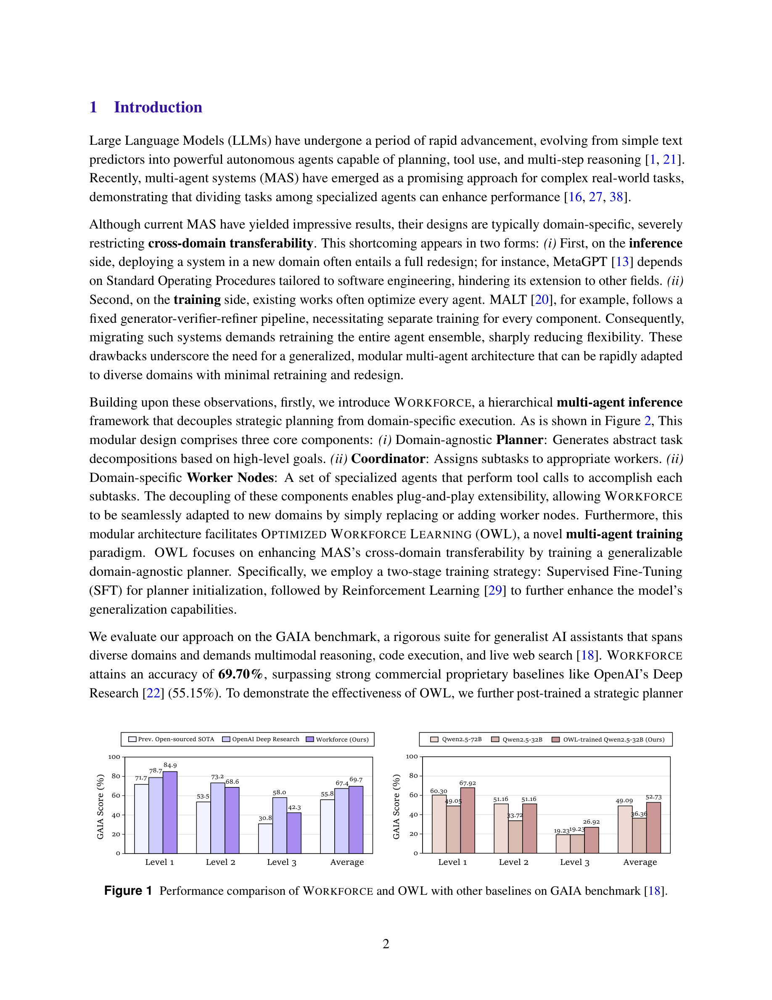
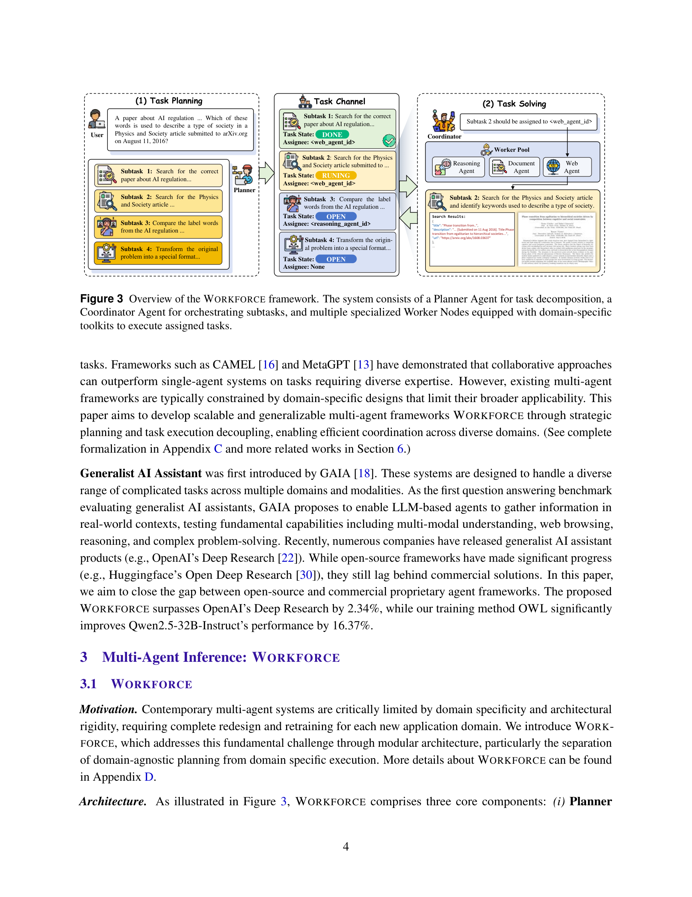
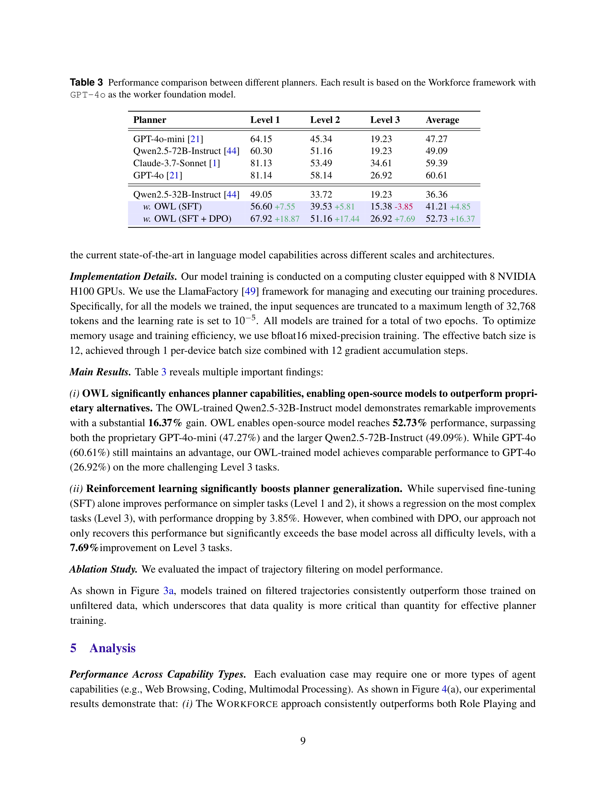
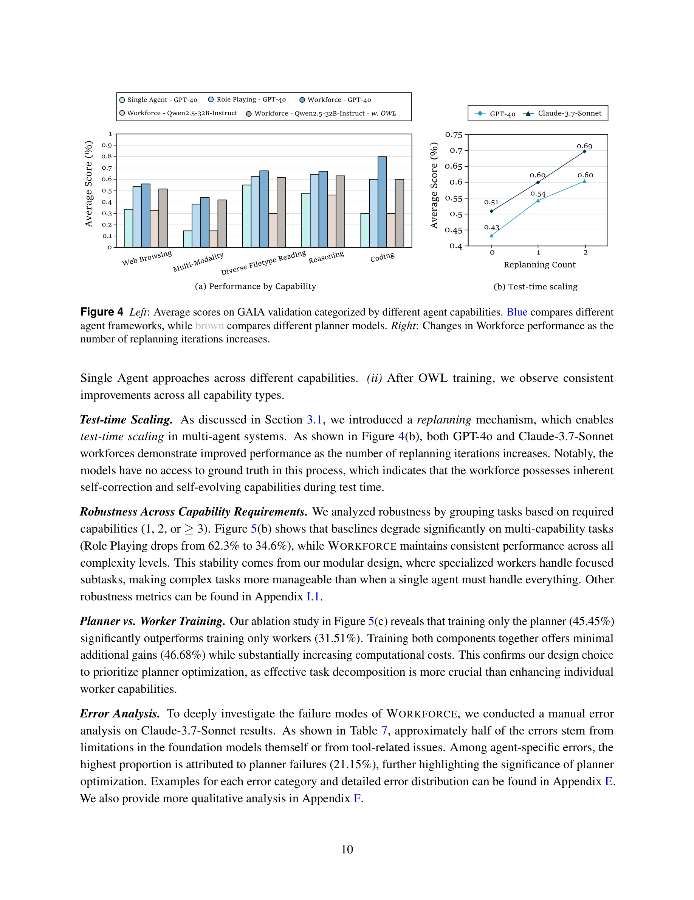

Figure 1
LLM 기반 멀티 에이전트 시스템의 도메인 간 전이성(cross-domain transferability) 문제를 해결하기 위한 계층적 멀티 에이전트 프레임워크 WORKFORCE와, 도메인 비종속적(domain-agnostic) Planner를 강화학습으로 최적화하는 학습 패러다임 OWL(Optimized Workforce Learning)을 제안한다. 핵심 설계 원칙은 "안정적인 코어(Planner), 교체 가능한 주변부(Worker Nodes)"로, 새로운 도메인에 적응할 때 Worker만 교체하면 되도록 전략적 계획과 도메인별 실행을 분리한 것이다.

Figure 3

Figure 4

Figure 5
2단계 학습: 1. SFT (Supervised Fine-Tuning): GPT-4o-mini로 생성한 전문가 궤적(trajectory)에서 Planner 초기화. 3,466개 궤적 중 품질 필터링으로 1,599개 사용. 2. DPO (Direct Preference Optimization): SFT 모델에서 각 질문당 4개 궤적을 rollout하여 정답/오답 쌍을 구성. 1,009개 선호 쌍으로 강화학습.
Task Curriculum (4개 데이터셋): - HotpotQA: 다중 홉 추론 + 웹 브라우징 - WikiTableQuestions: 표 데이터 처리 - Math-related: 논리적 추론 + 코딩 - Infinity-MM: 멀티모달 처리
| 모델/시스템 | GAIA 평균 정확도 |
|---|---|
| Single Agent (GPT-4o) | 37.58% |
| Role Playing (GPT-4o) | 54.55% |
| WORKFORCE (GPT-4o) | 60.61% |
| WORKFORCE (Claude-3.7-Sonnet) | 69.70% |
| OpenAI Deep Research (O3) | 67.36% |
| OWL-trained Qwen2.5-32B | 52.73% |
OWL/WORKFORCE는 멀티 에이전트 시스템의 실용적 설계 원칙을 제시한 중요한 연구다. 특히 "Planner만 학습하면 된다"는 핵심 통찰은 멀티 에이전트 학습의 효율성을 크게 높이며, Worker만 학습하면 오히려 성능이 하락한다는 발견은 "효과적인 과제 분해가 개별 실행 능력보다 중요하다"는 시사점을 제공한다. 오픈소스 시스템으로서 OpenAI Deep Research를 넘어선 것은 의미 있는 성과이나, Level 3 과제에서의 약점과 도구 의존성은 여전히 해결해야 할 과제다. CAMEL-AI 기반의 완전 오픈소스 공개는 커뮤니티 기여를 촉진할 수 있는 긍정적 요소다. 향후 AI for Science 영역에서 WORKFORCE를 과학적 도구(시뮬레이션, 실험 자동화 등)와 결합하면 흥미로운 확장이 가능할 것이다.